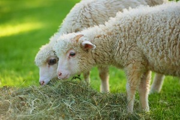

ϣⲟⲩϣⲏⲧ B nn, herb eaten by sheep: MG 25 236 sheep came to marsh ⲉⲟⲩⲱⲙ ϣ., whilst cattle there eat ⲟⲩⲟⲧⲟⲩⲉⲧ = Gött Ar 114 97 العشب و … الشعارى من النواحى; P 54 127 = BMOr 8775 123 حشيش.

ϣⲟⲩϣⲏⲧ B nn, herb eaten by sheep: MG 25 236 sheep came to marsh ⲉⲟⲩⲱⲙ ϣ., whilst cattle there eat ⲟⲩⲟⲧⲟⲩⲉⲧ = Gött Ar 114 97 العشب و … الشعارى من النواحى; P 54 127 = BMOr 8775 123 حشيش.
| view | ϣⲟⲩϣⲓⲧⲥ B | (noun masculine) whistling, hissing [συρισμος]2012 |